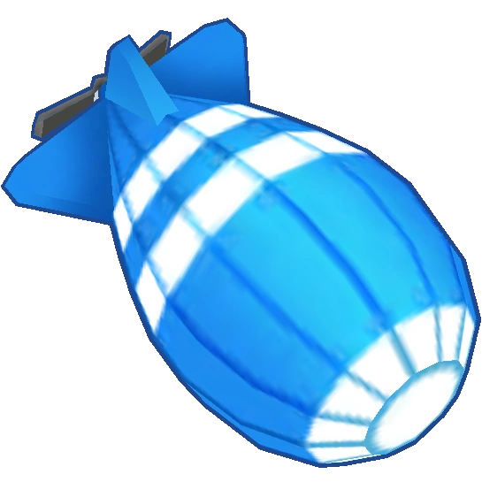

Bloons
In the Bloons franchise, your objective is to pop the various Bloons that travel down. Bloons vary in power, ranging all the way from the measly Red Bloon to the formidable M.O.A.B. and all inbetween. As the rounds progress, stronger and stronger Bloons appear, some requiring special means to pop them, such as Camo and Lead Bloons. Different towers specialize in popping certain Bloon types, such as excelling in destroying Lead Bloons, while others do not discriminate in their destruction. If too many Bloons pass through to the end of the track, the game will be lost, and will have to be restarted.